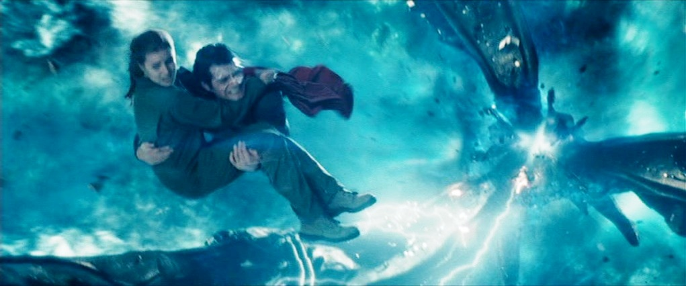

About The Man of Steel
The Man of Steel is amazing! He is a criptonian who cames to earth to do great acts for mankind.
Superman and Lois Lane
Superman's Characteristics
- He is got superstrenght
- He can fly as fast as a bullet
- He shoots laser from his eyes
Superman´s Friends
The Man of Steel has many good friends. Her best friend is Lois Lane who also becomes later his wife. Click on the link below to read more about them: